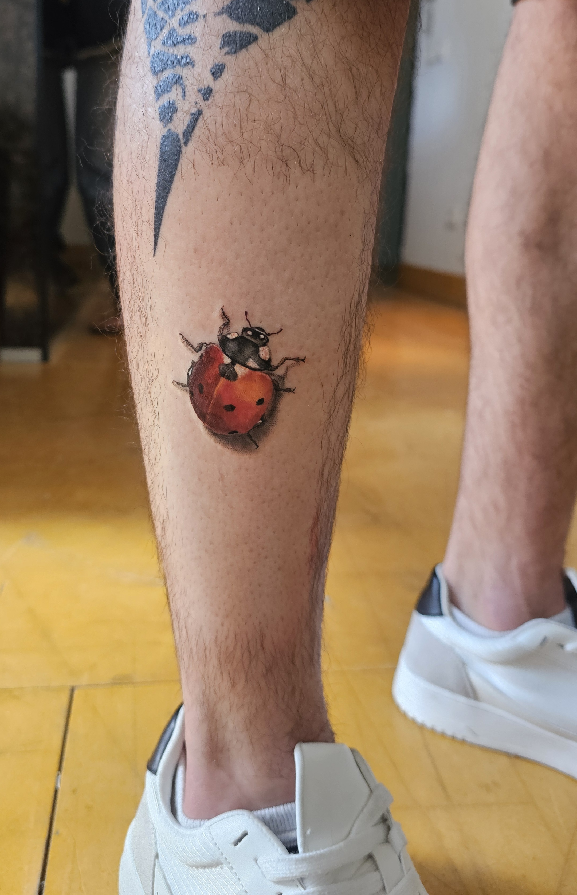

אופק שליט
נעים להכיר, אני אופק, ירושלמית במקור. אני אוהבת ליצור, לעבוד עם הידיים, ולמצוא דרכים לבטא את עצמי דרך אומנות.
נעים להכיר, אני אופק, ירושלמית במקור. אני אוהבת ליצור, לעבוד עם הידיים, ולמצוא דרכים לבטא את עצמי דרך אומנות.
האהבה שלי לאמנות התחילה בציור, ובעיקר בציור שמן, שהוא אחד התחומים שהכי מייצגים אותי. מתוך החיבור לצבע, לפרטים וליצירה, התפתח גם העיסוק שלי בעולם הקעקועים.

כיום אני מקעקעת, עם דגש על קעקועי צבע מפורטים, ריאליסטיים וקאברים לקעקועים ישנים. אני אוהבת ליצור עבודות שמשלבות עומק, צבע ודיוק, ולהפוך רעיונות אישיים ליצירות שנשארות על העור. אחד הקעקועים האהובים עליי הוא חיפושית צבעונית, תלת־ממדית וריאליסטית. חיפושית מטפסת מסמלת מזל טוב, ואני אוהבת את המשמעות שהיא מביאה איתה: תנועה, צמיחה והתחלה חדשה.
לפרטים, שאלות ותיאום תורים: